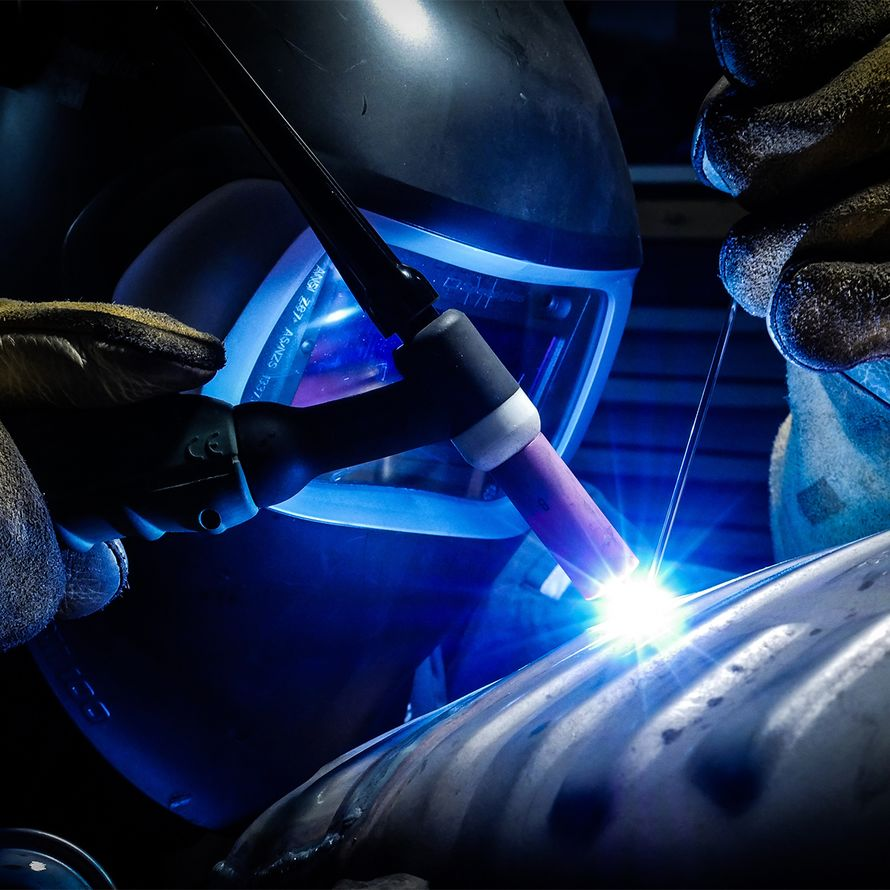
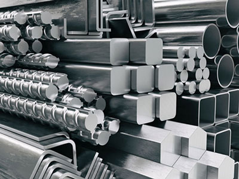
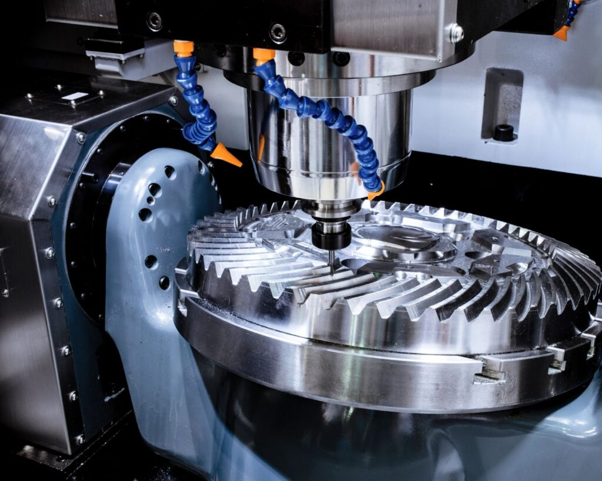
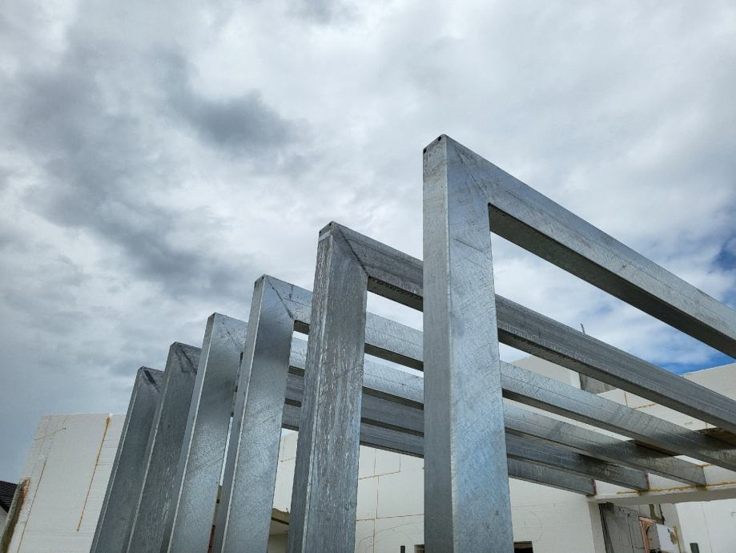

Što je EcoSteel?
EcoSteel je moderna tvrtka specijalizirana za obradu metala, zavarivanje i izradu metalnih konstrukcija za industrijske i privatne projekte. Zahvaljujući stručnom timu djelatnika, kvalitetnim materijalima i suvremenoj opremi, svojim klijentima pružamo pouzdana i dugotrajna rješenja prilagođena njihovim potrebama. Naš rad temelji se na preciznosti, sigurnosti i profesionalnom pristupu svakom projektu, bez obzira na njegovu veličinu i složenost. Već dugi niz godina sudjelujemo u realizaciji različitih građevinskih i industrijskih projekata te uspješno surađujemo s brojnim partnerima diljem Hrvatske. Kontinuirano ulažemo u razvoj tehnologije i usavršavanje zaposlenika kako bismo svojim klijentima osigurali najvišu razinu kvalitete usluge.
Čime se bavimo?
EcoSteel nudi širok spektar usluga iz područja metaloprerađivačke industrije. Naša djelatnost obuhvaća profesionalne usluge zavarivanja, održavanje pročistača otpadnih voda, inox fabrikaciju, bravarske usluge te izradu i montažu metalnih konstrukcija. Posebnu pažnju posvećujemo kvaliteti izvedbe i poštivanju dogovorenih rokova. Bez obzira radi li se o izradi jednostavne metalne ograde ili zahtjevnoj industrijskoj konstrukciji, svakom projektu pristupamo s jednakom razinom odgovornosti i stručnosti.

Profesionalne usluge zavarivanja

Održavanje pročistača otpadnih voda

Inox fabrikacija

Bravarske usluge

Izrada i montaža metalnih konstrukcija